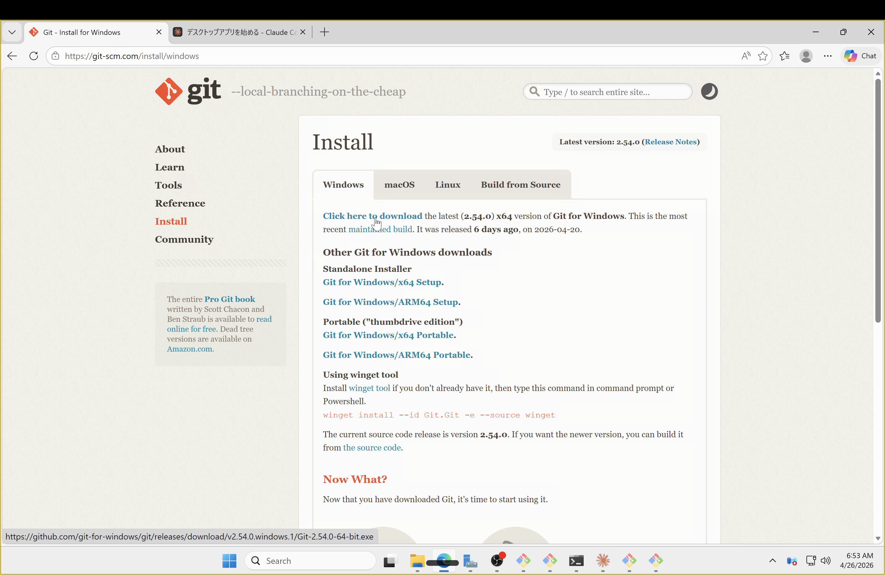
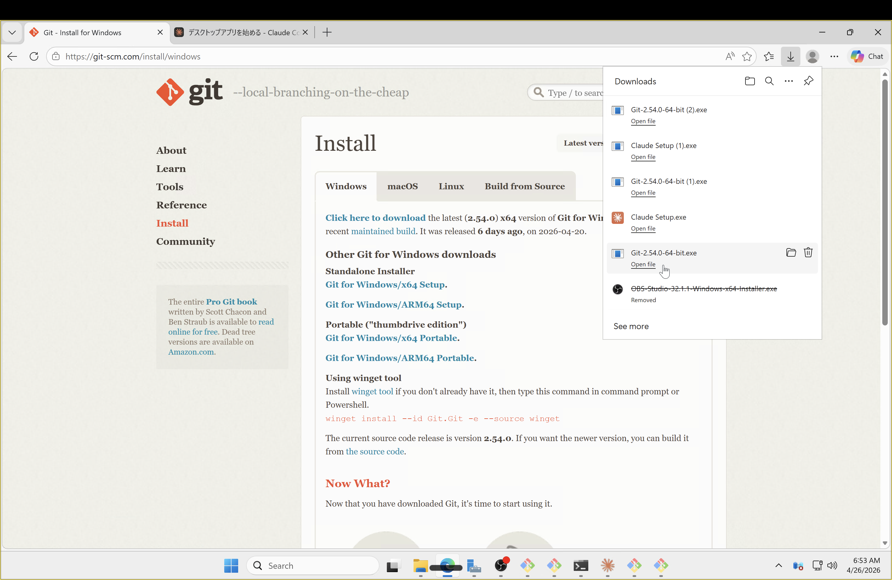
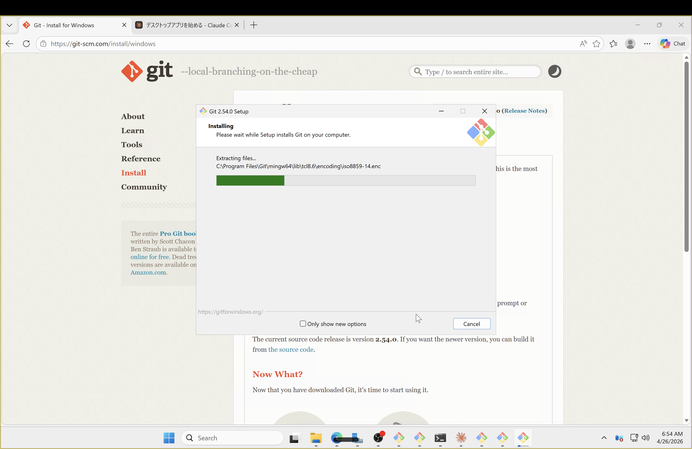
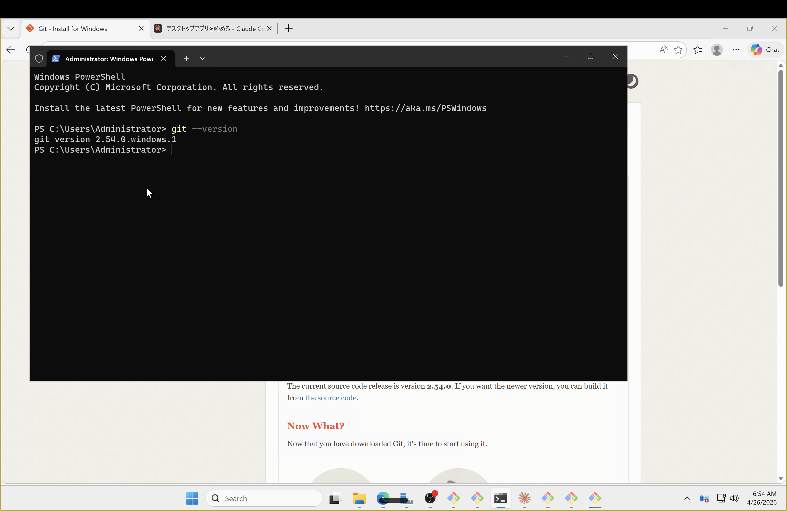
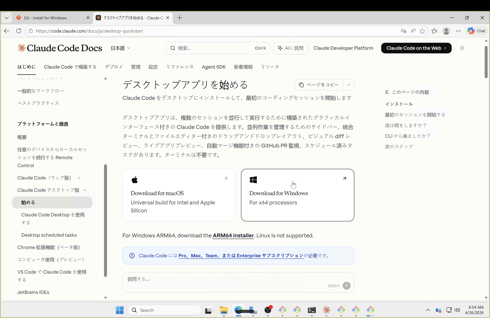
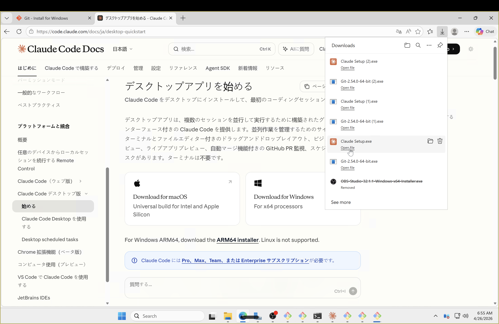
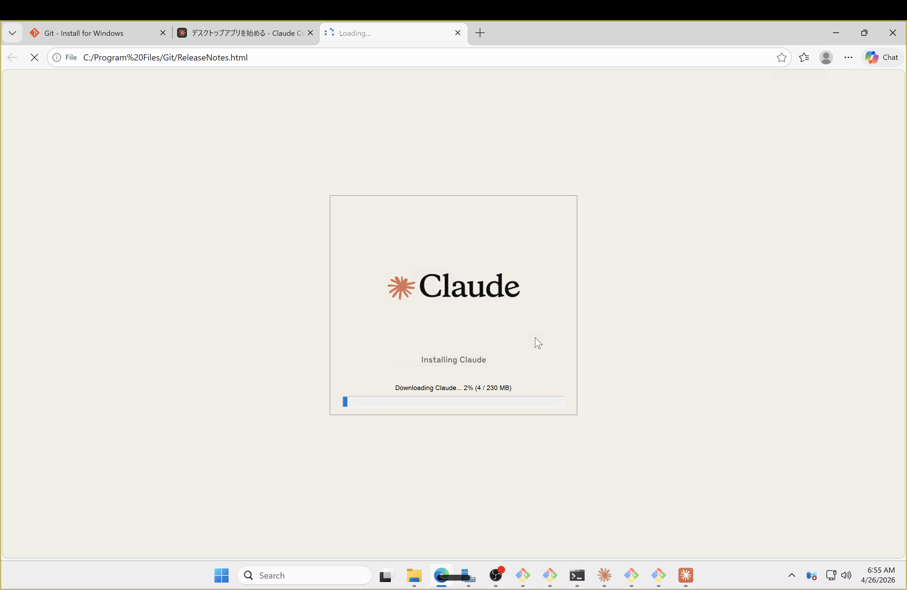
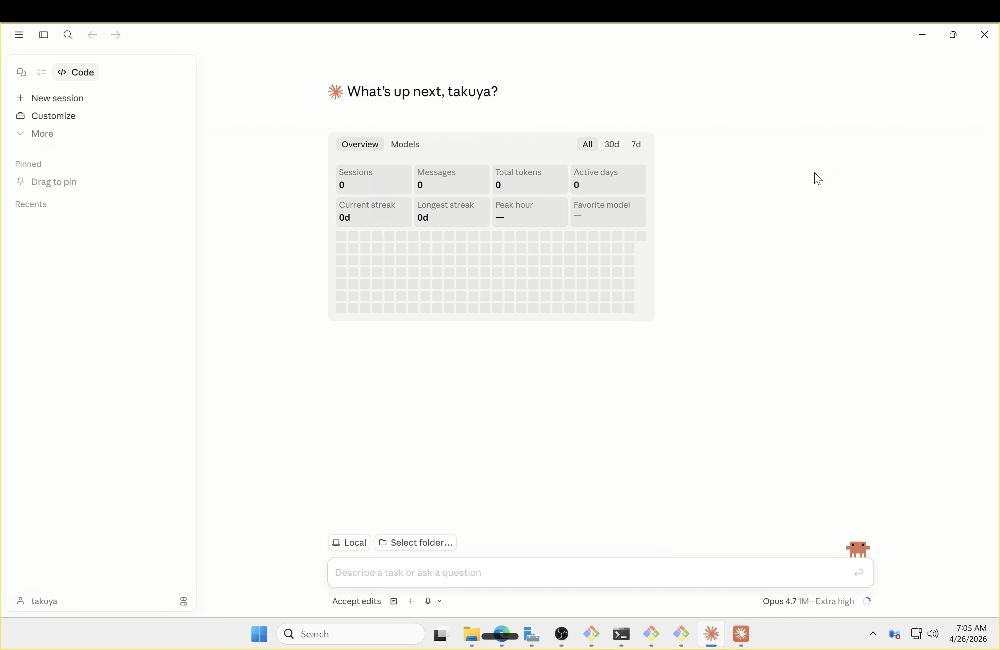

BEFORE YOU START
必要なもの
- Pro プラン以上
- 仕事で使うなら Max プランがおすすめ
- インストール手順: https://code.claude.com/docs/ja/desktop-quickstart
- 詰まったら Claude・ChatGPT に相談しながら進めよう
INSTALL
macOS へのインストール
- 1.
Claude.dmg を開いてアプリをインストール
- 2. Claude Code を起動してサインイン
INSTALL
Windows へのインストール
- 1.
Claude Setup.exe を実行してインストール
- 2. Claude Code を起動してサインイン
WINDOWS — STEP 1
Git for Windows をダウンロード

WINDOWS — STEP 2
ダウンロード完了

WINDOWS — STEP 3
インストーラーを実行

WINDOWS — STEP 4
PowerShell でバージョン確認

WINDOWS — STEP 5
Claude Code をダウンロード

WINDOWS — STEP 6
ダウンロード完了

WINDOWS — STEP 7
インストーラーを実行

WINDOWS — STEP 8
起動してサインイン

1 / 1
← → / Space